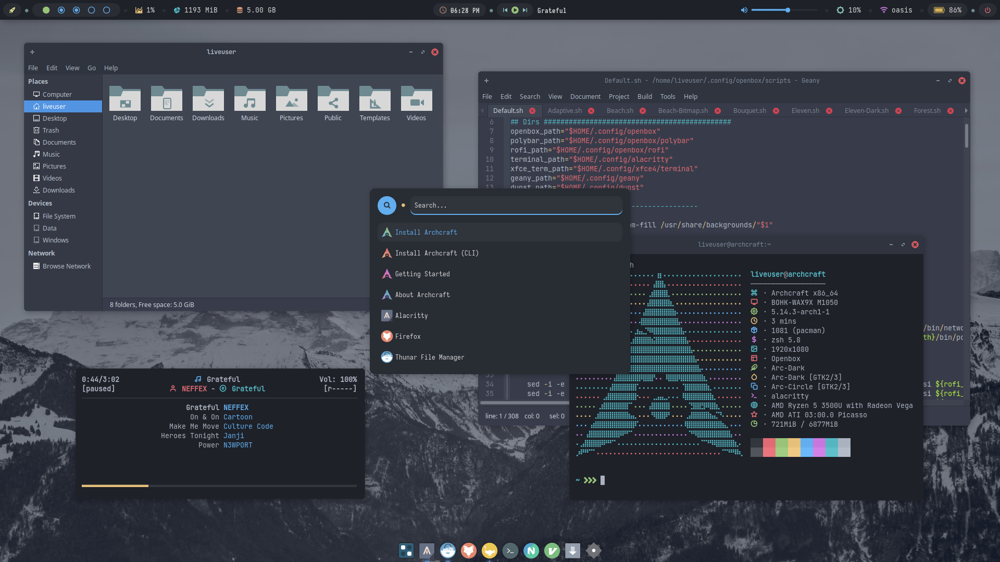

O que você vai encontrar neste site?
Aqui você vai encontrar alguns de meus trabalhos.
Contribuições feitas e idéias bem legais que hoje estão prontas para serem utilizadas.
O motivo principal deste site é facilitar o compartilhamento de scripts e soluções prontas para uso.

-
Leve
Script em shell.
Total integração com sistemas baseados em linux. Leve, rápido estável e super funcional para o dia a dia.
-
Linux
Feito por um apaixonado por simplicidade e que preserva o minimalismo,
Juntando tudo em um só lugar.
-
Poderoso
Script de fácil entendimento e flexibilidade, tornando amigável e ao mesmo tempo seu parceiro na hora de realizar mutitarefas em sua empresa.
Junte-se às comunidades oficiais de Nilsonlinux, um monte de lugares amigáveis para discutir questões, compartilhar experiências, e muito mais.
Precisa de adaptação em sua empresa ou local de trabalho?
Se você está procurando por script customizado, feito sob medida de acordo com suas necessidades e trabalho, então eu posso te ajudar.
Posso criar um script totalmente personalizado de acordo com o que precisa.
Já fiz isso para algumas pessoas, que estão totalmente satisfeitas com meu trabalho.
Se você estiver interessado, sinta-se à vontade para entrar em contato comigo.